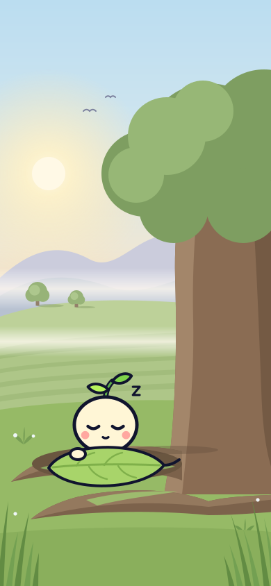
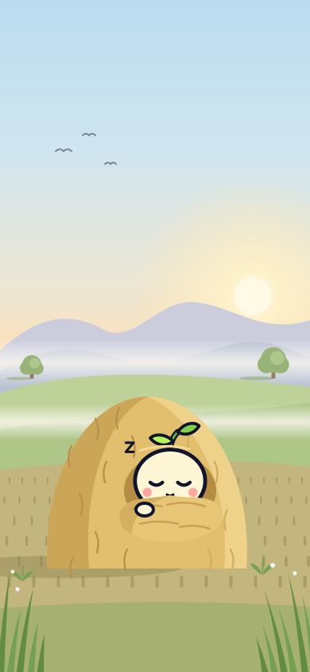

TURN 21 · 20a 자는 중 · 야외
아침 들판에서 자는 솔이
구도가 다른 3안입니다. 각 장면은 soli-assets 폴더의 SVG 한 장이고, layer-sky / layer-far / layer-mid / layer-near / layer-front 그룹으로 나뉩니다. 솔이는 layer-near 안의 soli 그룹입니다. 상단 100px과 하단 120px은 비워 두었습니다.
21a
흙 이불
햇빛 왼쪽 · 정면 근경
이장
아아, 이장이유. 해가 중천이구먼. 솔이는 아직 이불이유.
솔이 깨우기
21b
뿌리 둥지
햇빛 왼쪽 · 고목이 오른쪽을 감쌈

이장
아아, 이장이유. 해가 중천이구먼. 솔이는 아직 이불이유.
솔이 깨우기
21c
짚더미
햇빛 오른쪽 · 넓은 하늘

이장
아아, 이장이유. 해가 중천이구먼. 솔이는 아직 이불이유.
솔이 깨우기